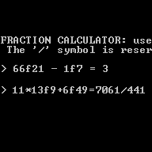

Repository

Idle Incremental Game
HTML / CSS · JavaScript / jQuery · BootstrapA browser game built to practice basic web development skills and familiarity with the DOM. I endeavored to keep the UI simple, uncluttered and responsive.
Repository

Rise of Nations Script
XML · BHS [derivative of C and JavaScripts]Rise of Nations is an incredible Real-time strategy game with it's own scripting language and even an IDE. I wrote a script which turns the game into a tower defense, composing and marching increasingly strong waves at the player. The script can be used in conjunction with other game mods.
Repository

Fractional Calculator
C++Simple CLI program that parses input using a primitive grammar that can make calculations using fractions. Primarily an exercise in grammar design and implementation.
Repository